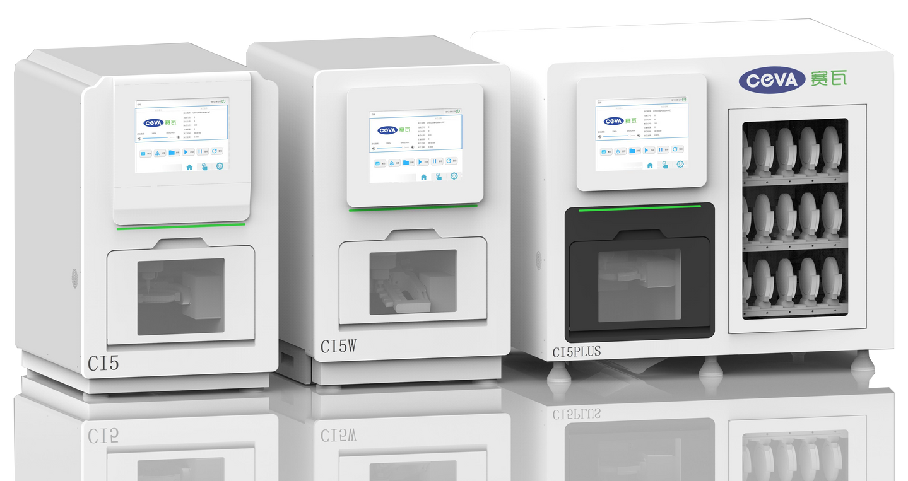
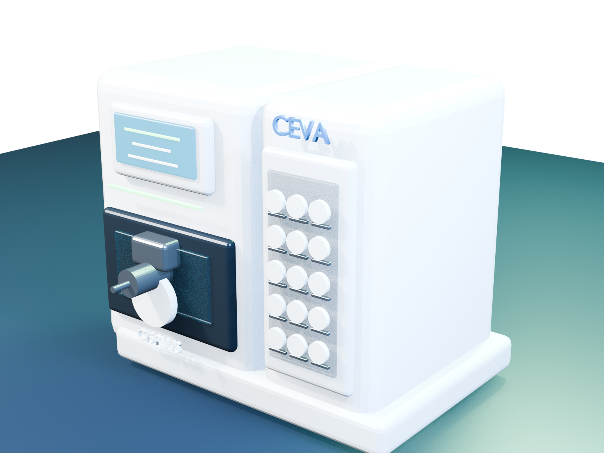
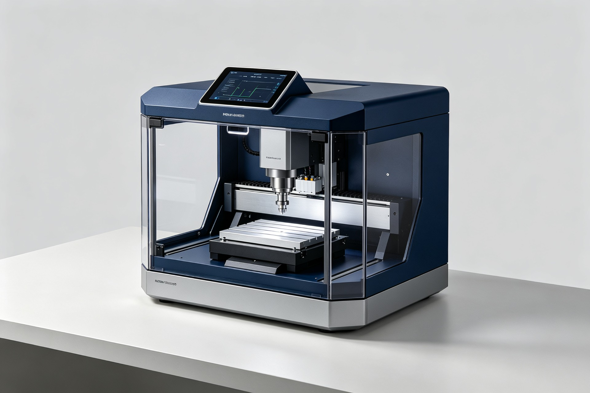

01 / 03
CI5
五轴干式义齿切削设备，以航空铝材机身、全伺服驱动与开放式 CAM 工作流，面向稳定、高效的日常加工。
- 加工精度
- 0.01 mm
- 主轴转速
- 0–60,000 rpm
- 刀库容量
- 9 把
- 设备尺寸
- 520 × 645 × 820 mm
DIGITAL DENTISTRY · INTELLIGENT CNC
从数字化口腔 CAD/CAM 设备，到面向未来的桌面级智能 CNC，赛瓦专注于让高精度加工更稳定、更高效、更易用。

PRODUCT MATRIX
从紧凑型干切，到干湿两用，再到无人化自动换盘。参数均依据用户提供的 2024 产品宣传册整理。

01 / 03
五轴干式义齿切削设备，以航空铝材机身、全伺服驱动与开放式 CAM 工作流，面向稳定、高效的日常加工。
DIGITAL WORKFLOW
以开放式排版 CAM 串联数字化工作流，支持多类义齿修复体和材料加工，让设备、工艺与生产管理在同一链路协同。

概念产品 · 产品化阶段NEXT: DESKTOP CNC
面向创客、实验室与小微制造场景的桌面级智能 CNC 正处于产品化阶段。规划集成自动换刀、RFID 刀具管理、3D 探针与 AI-CAM 辅助能力。
以上为现阶段研发目标与概念展示，不构成已量产产品参数承诺。
ABOUT CEVA
湖州赛瓦科技有限公司聚焦数字化口腔设备与桌面级智能 CNC 的软硬件研发、生产与全球销售。
围绕机械结构、运动控制、CAM 工作流与联网管理持续迭代，把复杂加工能力封装为直观、稳定的产品体验。
航空铝材床身、研磨级丝杆与全伺服驱动。
开放式 CAM 工作流，适配多种材料与修复体。
自动换刀、自动换盘与物联网功能协同。
LET'S BUILD PRECISELY